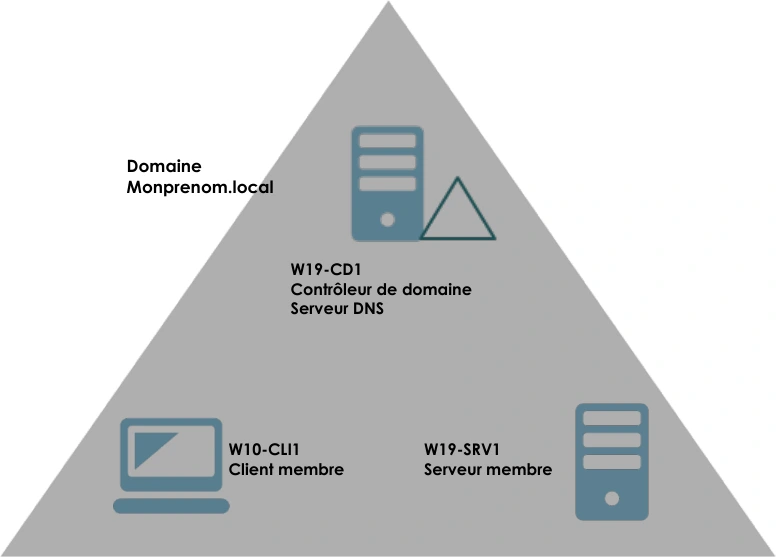
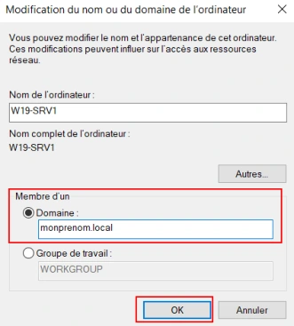

Le support est transcrit et structuré pour la lecture. Les valeurs secrètes et les noms propres au centre de formation sont neutralisés dans les exemples concernés.
Avant de démarrer ce TP, il convient d’avoir suivi les vidéos du module 2 et réalisé les TP précédents.
30 minutes à 1 heure
Prérequis :
Création d’un contexte de domaine Active Directory :

Sur W19-SRV1 et W10-CLI1 il est important d’avoir comme serveur DNS préféré l’adresse IP de W19-CD1
Analyse de différents cas d’ouverture de session :
Assurez-vous au préalable que les trois hôtes communiquent entre eux.
Oui □ NonOui □ NonAvec le compte administrateur du domaine ou tout autre compte créé sur l’annuaire Active Directory et comptes locaux de W10-CLI.
Oui □ Non
Avec le compte administrateur du domaine ou tout autre compte créé sur l’annuaire Active Directory.
Dans la console : Utilisateurs et ordinateurs Active Directory/Centre d’administration Active Directory.